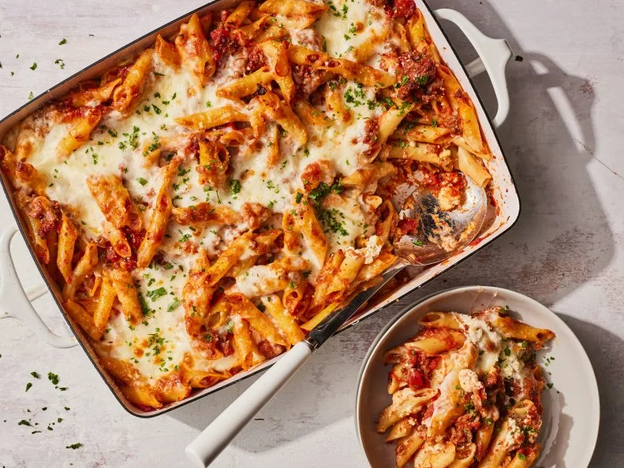

Mostaccioli
the Odine Recipes

Description
The best baked mostaccioli has everything you love about lasagna — a savory meat sauce, creamy ricotta and melty mozzarella bubbling at the edges. But instead of flat lasagna noodles, the pasta is mostaccioli, a type of penne with a smooth exterior. The short, tubular shape encourages plenty of sauce and cheese to get trapped inside so every bite is satisfying. We upped the ante with a combination of ground beef and sweet Italian sausage, providing the classic meatiness in the tomato sauce. While mostaccioli originates from the Campania region in southern Italy, this specific dish has ties to Chicago and St. Louis as a hearty casserole to serve at large family gatherings.
Ingredients
- 1 tablespoon olive oil, plus more for greasing the baking dish
- 1 small yellow onion, finely chopped
- Kosher salt and freshly ground black pepper
- 1/2 pound ground beef, 80/20
- 1/2 pound sweet Italian sausage, casings removed (from about 3 sausage links)
- 4 cloves garlic, minced
- 2 tablespoons tomato paste
- 1/2 teaspoon dried oregano, plus 1/4 teaspoon more for the ricotta
- Pinch crushed red pepper flakes (optional)
- One 28-ounce can crushed tomatoes, preferably San Marzano
- 3 sprigs fresh parsley, plus more finely chopped parsley leaves for serving (about 1 tablespoon)
- 1 pound mostaccioli
- 1 large egg
- 1/4 cup plus 3 tablespoons finely grated Pecorino Romano
- 8 ounces part-skim mozzarella, freshly shredded (about 2 cups)
Steps
- Heat the 1 tablespoon olive oil in a large skillet over medium-high heat. Add the onion, a good pinch of salt and several grinds of black pepper. Cook, stirring occasionally, until the onion is tender and translucent, about 5 minutes. Add the ground beef and sausage; cook, breaking up the meat with a wooden spoon, until crumbled, golden brown and no longer pink, about 8 minutes. Add the garlic, tomato paste, 1/2 teaspoon oregano, crushed red pepper flakes (if using), 1 teaspoon salt and several grinds of black pepper; cook, stirring, until the garlic is tender and the tomato paste is thoroughly combined, 1 to 2 minutes. Add the crushed tomatoes, parsley sprigs and 1/4 cup water and stir to combine. Bring to a simmer, then cover partially with a lid and reduce the heat to medium low. Cook, stirring occasionally, until the sauce has thickened slightly and the flavors have melded, about 15 minutes. Taste and adjust the seasoning with salt and black pepper.
- Meanwhile, bring a large pot of salted water to a boil over medium-high heat. Add the pasta and cook according to the package directions, stirring occasionally, until al dente. Drain well.
- Meanwhile, stir together the ricotta, 1/4 cup of the Pecorino Romano, the egg, remaining 1/4 teaspoon oregano, pinch of salt and a couple grinds of black pepper in a medium bowl until smooth and combined; set aside.
- Preheat the oven to 350 degrees F and lightly grease the bottom and sides of a 9-by-13-inch baking dish with olive oil. Once the meat sauce is finished cooking, remove the parsley sprigs and discard. Stir in the al dente mostaccioli until well coated.
- Transfer half of the pasta and sauce to the prepared baking dish, then spread the ricotta mixture on top in an even layer with a rubber spatula or small offset spatula. Top with the remaining pasta and sauce, followed by the mozzarella, then the remaining 3 tablespoons Pecorino Romano.
- Cover the baking dish with foil and bake until heated through, about 20 minutes. Remove the foil and bake until the cheese is completely melted and the sauce is bubbling at the edges, 10 to 15 minutes more. Sprinkle with chopped parsley. Let rest for about 5 minutes before serving.